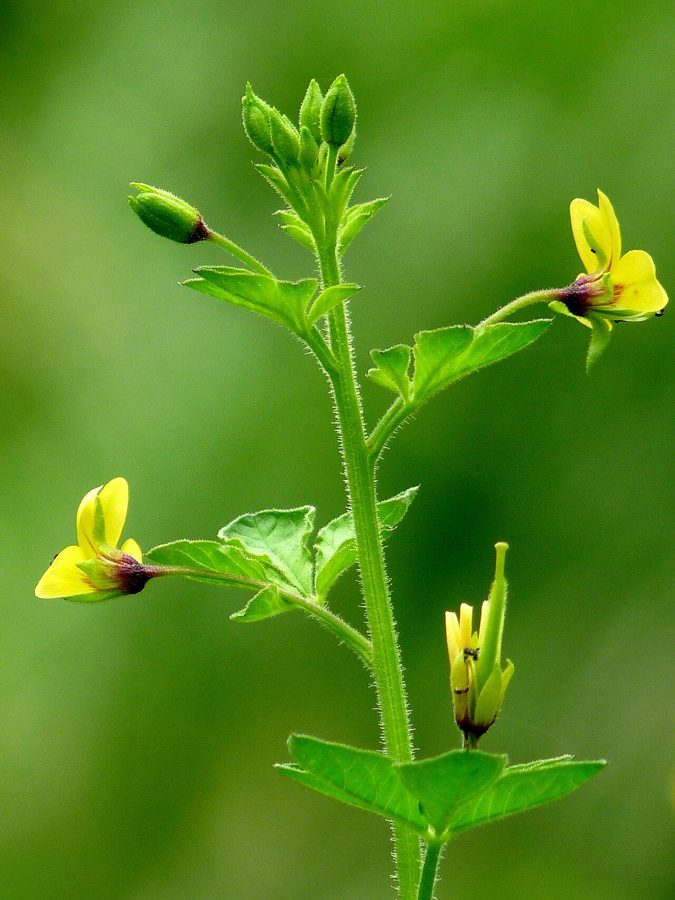

हुरहुरTick Weed
Cleome viscosa · Capparaceae · FLR-0198

- Scientific name वैज्ञानिक नाम
- Cleome viscosa L.
- Family कुल
- Capparaceae
- Hindi हिंदी
- हुरहुर
- Local names स्थानीय नाम
- hurhur, hurhoor, hulhul, tick weed
- Status here यहाँ की स्थिति
- native
- Movement आवागमन
- Resident, here all year
- IUCN IUCN
- not evaluated
- Review समीक्षा
- audited and independently read
When to look कब देखें
Expected mainly in June, July, August, September, October. मुख्यतः जून, जुलाई, अगस्त, सितंबर, अक्टूबर में अपेक्षित।
Uses and possibilities उपयोग और संभावनाएँ
“Traditional medicine” means a documented traditional use, not a claim that it works. Nothing on this page is medical advice.
Drawn from the documented uses in the profile below, where each is labelled traditional, current or a research lead. All uses →
हुरहुर / Tick Weed
Cleome viscosa L. — Capparaceae
हुरहुर — गर्मी-बरसात में उजड़ी ज़मीन पर अपने आप उगने वाला एक तीखी सूँघ वाला पौधा। तना और फली दोनों चिपचिपे होते हैं — बीज कपड़ों और जानवरों से चिपक जाते हैं। लंबी, पतली फलियों में काले बीज। गाँवों में दाद-खुजली और खुरदरी त्वचा के लिए पत्तियों का उपयोग किया जाता है। बहुत मज़बूत गंध वाला पौधा है।
Quick Identification त्वरित पहचान
| Feature | Description |
|---|---|
| Height & Habit | Erect annual herb, 30–90 cm, wiry, branched above |
| Leaves | Alternate, compound, palmate, 5–7 leaflets, 3–8 cm long |
| Flowers | Pink or mauve, small, clustered at branch tips, 1–1.5 cm |
| Fruits | Long, slender, erect pods (3–8 cm), sticky and viscous |
| Seeds | Small, black, numerous in each pod |
| Stems | Green, slightly hairy, glandular-sticky |
Field tip: Look for an erect, often unpleasant-smelling weed with palmate compound leaves and small pink flowers, followed by long, upright, sticky pods. The entire plant feels viscous and sticky to the touch. Commonly found on roadsides and disturbed ground during the monsoon season.
Morphology आकारिकी
| Measurement | Range |
|---|---|
| Plant height | 30–90 cm |
| Leaf length | 3–8 cm |
| Leaflet count | 5–7 per leaf |
| Flower diameter | 0.8–1.5 cm |
| Pod length | 3–8 cm |
| Seeds per pod | 15–30 |
Habit: Erect annual herb; 30–90 cm tall; stem wiry, slightly hairy, with glandular hairs, giving the whole plant a sticky feel.
Leaves: Alternate; compound, palmate; leaflets 5–7, petiolate, lanceolate-obovate, 1–4 cm × 0.5–2 cm; surface slightly hairy; margins entire; apex acute.
Flowers: Small, regular, borne in racemose clusters at branch tips; petals 4, pink, mauve, or rarely white, 0.8–1.5 cm; stamens 6, prominent; ovary superior.
Fruits: Long, slender, linear, erect or slightly spreading, 3–8 cm × 3–5 mm, with a viscous, glandular coating; septate (divided into chambers).
Seeds: Small, black, smooth, 2–3 mm, numerous (15–30 per pod).
हिंदी: पत्तियाँ हथेली जैसी, 5-7 पत्तियों की। फूल गुलाबी या बैंगनी। फली लंबी, पतली, चिपचिपी। बीज काले, छोटे।
Ecological Impact पारिस्थितिकी
Zoochorous dispersal: The sticky coating on the fruits and pods causes them to adhere readily to clothing, animal fur, and feathers. Cattle, dogs, humans, and birds all serve as dispersal agents. A single mature plant can produce dozens of pods, each containing 15–30 seeds, resulting in high propagule pressure on roadsides and field margins.
Odour and chemical ecology: The plant produces volatile compounds, especially from glandular hairs, giving it a sharp, pungent odour. This odour may deter some herbivores but can also indicate the presence of bioactive compounds.
Pioneer ecology: Cleome viscosa germinates rapidly in disturbed soils, sun-exposed microsites, and road verges. It is often among the first plants to colonize fallow land and freshly cleared areas. The plant's rapid growth and prolific seed production allow quick population establishment.
हिंदी: चिपचिपी फली — चराई के अलग-अलग तरीकों से फैलती है। तीखी गंध वाला। उजड़ी ज़मीन में पहले उगता है।
Life Cycle / Phenology जीवन चक्र
| Month | Event |
|---|---|
| May–June | Seed germinates with onset of summer rains; seedling emergence |
| June–July | Rapid vegetative growth; branching and leaf expansion |
| July–August | Flowering; flower clusters appear progressively |
| August–September | Pod maturation; seeds ripen inside sticky pods |
| September–October | Seed dispersal; mature plants shed seeds |
| October onwards | Plant senescence; death after first cold spell |
From germination to first flower: 6–8 weeks. Fruiting extends over 2–3 months with waves of pod production as the plant grows.
हिंदी: जून-जुलाई: बीज अंकुरण और वृद्धि। जुलाई-सितंबर: फूल और फली। सितंबर-अक्टूबर: बीज फैलाव।
Agricultural / Human Relevance कृषि और मानव संबंध
Traditional medicine: Cleome viscosa is documented in traditional and folk medicine of India. The leaf and root decoction is traditionally used for treating skin conditions, including scabies, eczema, and dermatitis. The plant is also used as a poultice for wounds and boils.
Cosmetic use: The bitter, sticky extract is reported in some traditional practices to be used in soap-making and skin cleansing preparations, possibly due to saponin content (not verified in consulted sources).
Weed status: In cultivated fields, Cleome viscosa is a minor weed, less problematic than many other species, but the sticky fruits contaminate harvested crops and can adhere to threshers and storage grain. Hand-pulling is an effective control method.
Nutritional value: The tender leaves are occasionally eaten as a potherb in famine conditions or during seasonal scarcity, though not a preferred vegetable.
हिंदी: दाद-खुजली के लिए पारंपरिक दवाई। साबुन बनाने में कभी-कभी प्रयोग। पत्तियों को सब्जी की तरह भी खाया जाता है। खेतों में नुकसान कम है।
Expected Locally स्थानीय रूप से अपेक्षित
Not a field record. Written from published accounts for eastern Uttar Pradesh. No confirmed local sighting yet — if you have seen it, that is what the atlas needs.
अभी तक स्थानीय पुष्टि नहीं। यह विवरण प्रकाशित स्रोतों से है, किसी अवलोकन से नहीं।
Cleome viscosa is expected to appear on roadsides, field margins, and waste ground in Basti district during the monsoon and post-monsoon season (June to October), particularly on sun-exposed, disturbed ground. The sticky fruits should be easily noticeable on clothing after walking through infested areas. The strong odour will aid identification.
Distribution वितरण
Global range: Native to tropical Asia and Africa; widespread in the Indo-Gangetic region and throughout India up to 1,200 m elevation.
In India: Common throughout the country on roadsides, field margins, and disturbed ground, especially in tropical and subtropical regions.
In Uttar Pradesh: Found in all districts as a common ruderal weed, particularly abundant in the eastern and central plains.
In Basti district / eastern UP: Expected as a common weed in summer and monsoon season on field margins and roadsides.
Research Questions शोध प्रश्न
Anyone can investigate these | कोई भी इन प्रश्नों की जाँच कर सकता है
- How many seeds does one hurhur plant produce, and what fraction stick to clothing? — Count pods on mature plants; collect seeds; test adhesion to cloth.
- Which animals or insects visit hurhur flowers for pollen or nectar? — Observe flowers at different times; identify visitors.
- Is the traditional use of hurhur for skin conditions documented in local healers' records, and what is the preparation method? / हुरहुर को त्वचा रोगों के लिए किस तरह बनाया जाता है? — Interview village healers; document recipes.
- Can hurhur grow in waterlogged soil, or does it prefer well-drained ground? — Compare growth in wet vs. dry microsites.
- Does the pungent odour deter specific herbivores, or are leaves grazed by livestock? — Observe grazing animals near plants; test palatability.
Similar Species मिलती-जुलती प्रजातियाँ
| Species | How to tell apart | हिंदी |
|---|---|---|
| Cleome gynandra | Flowers with longer petals and prominent stamens; pods ribbed differently | फूल बड़े, फली अलग तरह की |
| Capparis spinosa | Spiny stems; leaves simple, fleshy; capers in commerce | काँटेदार तना, पत्तियाँ सरल |
Field rule: An erect, sticky-stemmed weed with palmate compound leaves (5–7 leaflets), small pink flowers, and long sticky pods is hurhur.
Taxonomy & Classification वर्गीकरण
Original description. Cleome viscosa was described by Carl Linnaeus in 1753 in Species Plantarum. The genus name Cleome is derived from the Greek word for "to shut" or "to close." The specific name viscosa refers to the viscous (sticky) nature of the plant.
Subspecies. Monotypic — no subspecies are currently recognised.
Family and order placement. Capparaceae (Caper family), order Capparales. The family is diverse in the tropics and includes cultivated capers (Capparis species).
Phylogenetic notes. Cleome viscosa is closely related to other Cleome species in tropical Asia. Recent molecular work has suggested some reclassification within Capparaceae, but Cleome viscosa remains in the genus Cleome.
IUCN status rationale. Not evaluated. As a common, widespread native weed, the species faces no conservation threat.
Photo Gallery फोटो गैलरी
Note: Add field photos tomedia/species/hurhur/
फोटो निर्देश: पूरा पौधा, फूल, फली (चिपचिपी), और बीज।
Photos needed आवश्यक फोटो
- [ ] Full plant in field or on roadside (पूरा पौधा)
- [ ] Flowers in cluster (फूलों का समूह)
- [ ] Sticky pods on plant (चिपचिपी फलियाँ)
- [ ] Fruit close-up showing stickiness (फली — चिपचिपापन)
- [ ] Seeds from ripe pod (पके बीज)
No photos yet — add field photos to media/species/hurhur/ and run node scripts/sync_photos.js.
References संदर्भ
- Linnaeus, C. (1753). Species Plantarum, Vol. 1. Laurentii Salvii, Stockholm.
- Hooker, J.D. (1872). Flora of British India, Vol. 1. L. Reeve & Co., London.
- Kirtikar, K.R. & Basu, B.D. (1935). Indian Medicinal Plants, Vol. 1. Lalit Mohan Basu, Allahabad.
- Botanical Survey of India. State Flora Series: Flora of Uttar Pradesh. BSI, Kolkata.
- IUCN Red List (2023). Assessments and species database.
- GBIF Occurrence Data — Cleome viscosa, India (2024–2026).
Source file: species/flora/weeds/hurhur.md